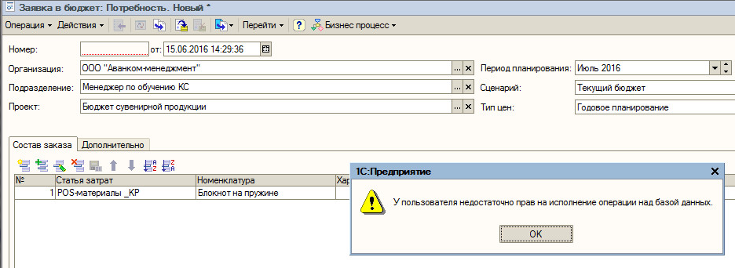
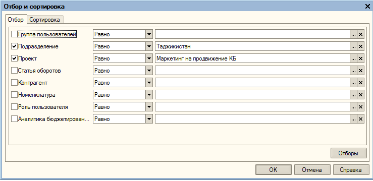
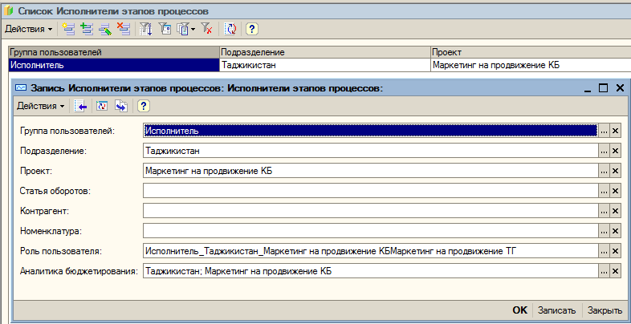
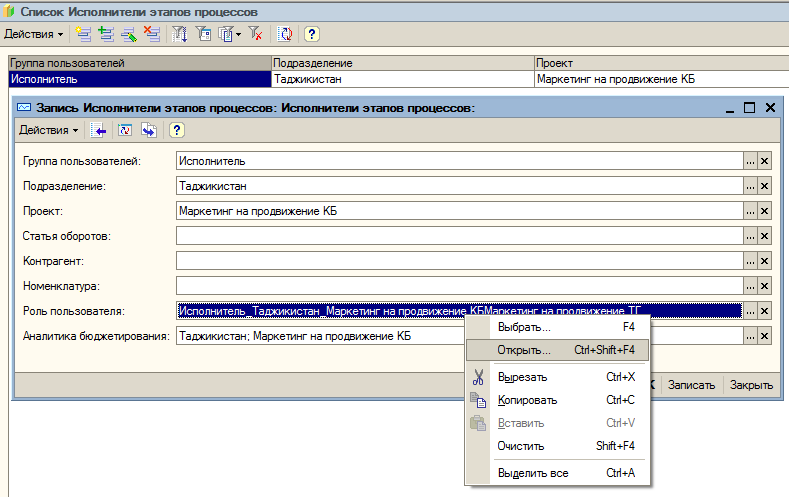
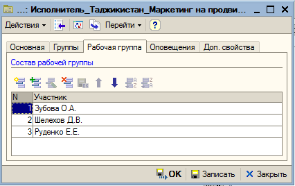
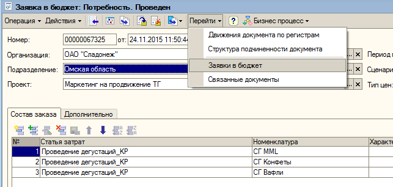
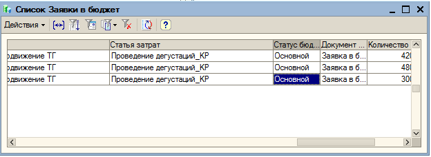
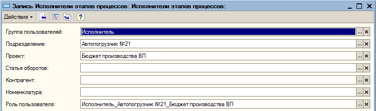
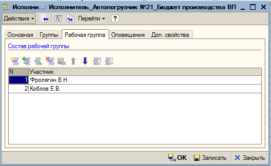

При сообщении, что не прав проверить РС "Исполнители этапов процессов"
Отбор

Открыть найденое

Добавить пользователя и сохранить

Далее проверить статус заявки


Должен быть дополнительный.
В данном случае корректировать нельзя.
Ответ: "Ваша заявка имеет статус основной, корректировать нельзя, обратитесь к экономистам".
Если записи в регистре нет, нужно добавить.

"роль пользователя" создается! Находим например похожую роль с .....Бюджет производства ВП, копируем, добавляем в рабочую группу того, кто обратился

Потом Саша обязательно должен запустить обработку!!!!